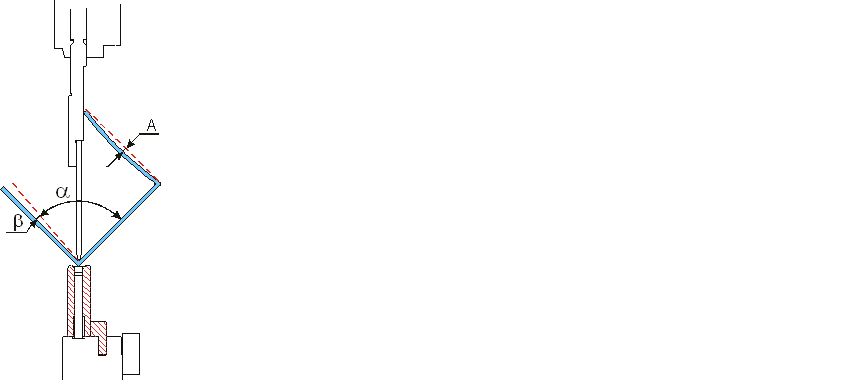
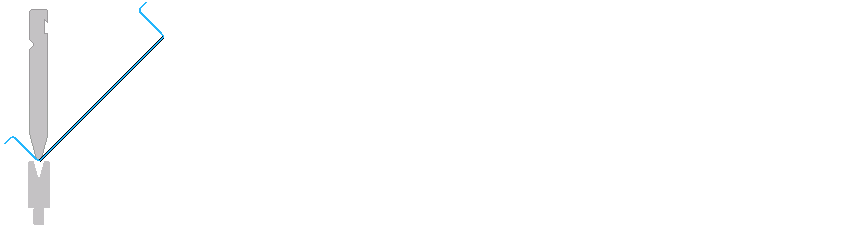
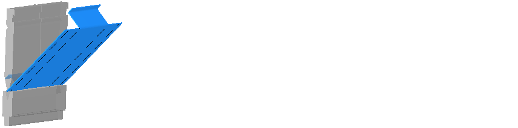

In dit dialoogvenster worden de opties voor de selectie van de gereedschappen en het bepalen van de buigvolgorde ingevoerd. Door de bijbehorende instellingen wordt een optimale berekening van de buigvolgorde bereikt.
Met de button Als standaard opslaan worden de instellingen met de functie Automatisch standaard toegepast op het huidige deel.
Tip: Door een klik op de functie Automatisch worden de instellingen toegepast op het buigdeel.
Instellingen
Deze optie verhindert, dat de benen van een deel elkaar raken. Deze optie moet alleen voor speciale gevallen gebruikt worden, omdat de functie het mogelijk aantal buigvolgordes aanzienlijk beperkt of buigvolgordes zelfs onmogelijk maakt.
Tip: Als benen naar elkaar worden gebogen, kan het gebeuren dat de zijkanten elkaar raken. Als deze optie geactiveerd wordt, wordt in dat geval een botsingsmelding weergegeven, terwijl de buiging probleemloos had kunnen worden gebogen. Deze optie moet worden gedeactiveerd om dit te verhinderen.
Deze optie draait het gereedschap in de gereedschapopname met 180°, als met de standaardpositie van het gereedschap het maximale aantal buigvolgordes dat is ingevoerd onder Maximaal aantal buigvolgordes niet kan worden gevonden.
Deze optie kan worden geactiveerd om bovengereedschappen met een afwijkende buigradius toe te laten. Als geen gereedschap met dezelfde buigradius kan worden ingezet, dan wordt het gereedschap met de dichtstbijzijnde buigradius (groter of kleiner) gezocht.
NOTE: Bij een andere verkortingswaarde wordt de geometrie van het deel niet aangepast. Het wijzigen van de verkorting voert daarom tot een wijziging in de beenlengte van het deel.
Info: Deze optie is alleen beschikbaar, als de optie Bovengereedschap automatisch selecteren is geactiveerd.
Deze optie bepaalt de buigvolgorde op basis van de betere positie van de achterste aanslagen.
Info: Deze optie is alleen beschikbaar, als bij de optie Maximaal aantal buigreeksen het aantal >1 is ingevoerd.
Met deze optie wordt het maximale aantal oplossingen aangegeven, dat voor de buigvolgorde van het deel moet worden gezocht. Als dit aantal bereikt is, dan wordt de beste oplossing aan het deel toegewezen als buigvolgorde.
Info: Bij complexe buigdelen kan het verhogen van dit aantal aanzienlijk lange berekeningstijd vragen.
Attention! Deze functie mag alleen voor dunne platen (tot ca. 2 mm) worden gebruikt. Bij sterkere platen en hoge tolerantiewaarden kan het gereedschap of de buigmachine door te grote krachten beschadigd raken bij de botsing met het buigdeel.
Als een buiging alleen met een beperkte aanraking van de boven- of ondergereedschappen kan worden gebogen, moet in dit optieveld een tolerantiewaarde in hoekgraden worden aangegeven. De maximale tolerantiewaarde is 15°. Bij het controleren van de hoek wordt deze tolerantiewaarde bij de doelwaarde van de buighoek opgeteld. Onder deze waarde wordt geen botsingsmelding afgegeven.
NOTE: De vervorming van het materiaal bij de botsing met het boven- of ondergereedschap moet binnen het elastische bereik van het materiaal blijven. Anders ontstaat een blijvende vervorming van het materiaal!
Fig.: Elastische vervorming tijdens het buigen

Legenda:
| A | elastisch vervormingsbereik |
| α | maximale buighoek zonder botsing |
| β | tolerantiewaarde |
Criteria
Deze optie legt het zwaartepunt van het deel voor de buigvolgordes eerder voor of achter het buiggereedschap.
Zwaartepunt voor: Bij zeer lange benen moet op de hoge hoeksnelheid tijdens het buigen worden gelet.
Zwaartepunt achter: Bij zeer lange benen moet erop worden gelet, dat het buigdeel op de aanslagvinger ligt om te voorkomen dat de benen doorbuigen.
Fig.: Zwaartepunt deel voor het buiggereedschap

Deze optie bepaalt of in principe eerst de korte of de lange benen van een deel eerst moeten worden gebogen.
Fig.: Korte buiglengte eerst

Deze optie bepaalt, welke buiging qua afstand tot het deelmidden in principe eerder moet worden gebogen.
Fig.: Verder van deelmidden eerst

Deze instelling bepaalt hoe zwaar het criterium meeweegt bij het berekenen van de buigvolgorde. Hoe hoger het criterium staat, des te zwaarder weegt het. Met de pijlen kunnen de criteria in de volgorde van zwaarte worden verschoven.
Info: Deze criteria komen overeen met de bovenliggende opties en de daar ingestelde eigenschappen. De Plaathantering zorgt ervoor dat het deel optimaal kan worden gebogen.
Eerst worden alle processen van de eerste doorsnede afwerkt. Zo stemt de volgorde van het buigen bij de numerieke programmering exact overeen met de geprogrammeerde volgorde.